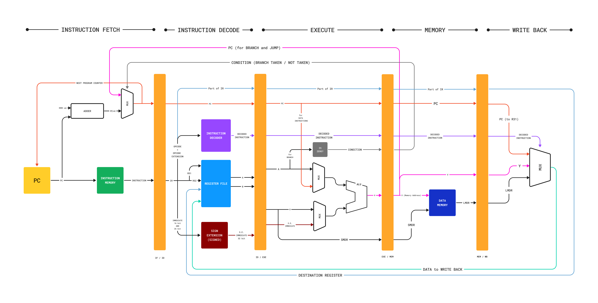
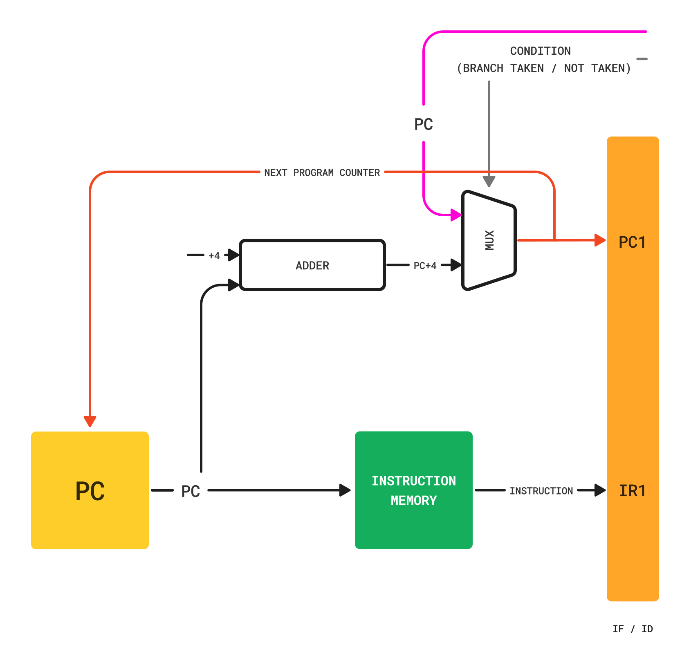
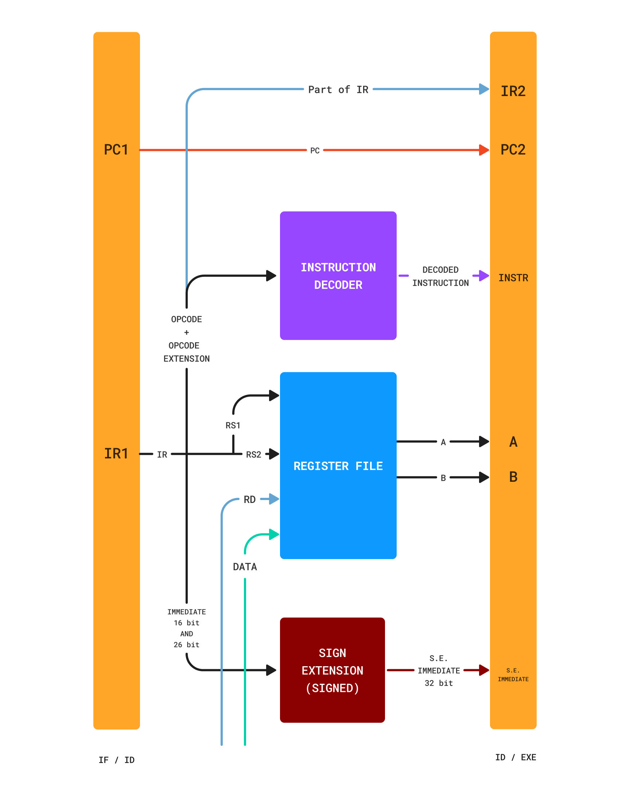
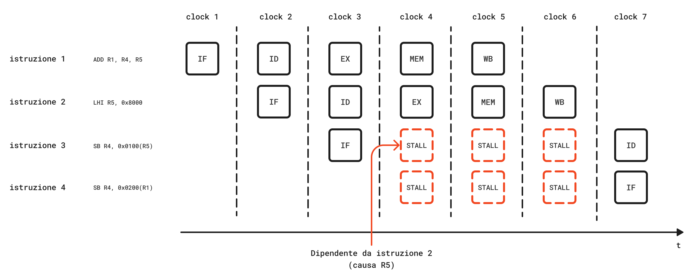

Definizione - Pipelinining
Come visto, l'implementazione sequenziale risulta essere particolarmente lenta in quanto ogni istruzione è eseguita singolarmente e solo al termine della precedente.
È possibile tuttavia notare che, per eseguire ogni istruzione, la CPU "deve attraversare" sempre le stesse fasi (anche se per qualche istruzione non ne esegue alcune). Tale osservazione rende un sistema basato su CPU adatto ad essere implementato grazie al principio del pipelinining, già ampiamente utilizzato in diversi settori dell'industria.
Per rendere più evidente le differenze (in termini di efficienza) tra un sistema sequenziale e uno in pipeline, consideriamo un sistema \( S\) che deve eseguire per \( n\) volte un'attività \( A\) e definiamo:
È possibile tuttavia notare che, per eseguire ogni istruzione, la CPU "deve attraversare" sempre le stesse fasi (anche se per qualche istruzione non ne esegue alcune). Tale osservazione rende un sistema basato su CPU adatto ad essere implementato grazie al principio del pipelinining, già ampiamente utilizzato in diversi settori dell'industria.
Per rendere più evidente le differenze (in termini di efficienza) tra un sistema sequenziale e uno in pipeline, consideriamo un sistema \( S\) che deve eseguire per \( n\) volte un'attività \( A\) e definiamo:
- la latenza (latency) \( T_A\), ovvero il tempo che intercorre tra l'inizio ed il completamento dell'attività \( A\) (in altre parole, il tempo di completamento);
- il throughput, ovvero la frequenza con cui sono completate le attività;
Definizione - Pipelinining in una CPU
Adattando tale principio e considerando che
Considerando quindi la pipeline e le varie istruzioni, esse evolveranno nel seguente modo:
- ogni istruzione necessita di \( 5\) fasi;
- il tempo di esecuzione di ogni fase è pari a quello del clock \( T_{CLK}\) (che dovrà essere quindi pari almeno al maggiore ritardo delle reti combinatorie presenti in ogni fase)
Considerando quindi la pipeline e le varie istruzioni, esse evolveranno nel seguente modo:
e, ovviamente, la pipeline evolverà nel seguente modo:
Definizione - Mutua esclusione dei componenti nell'implementazione pipeline
Per implementare il pipelining correttamente, è necessario considerare alcune problematiche legate alla mutua esclusione dei componenti. Dato che nello stesso istante ogni "fase" è potenzialmente attiva, è necessario che ogni componente sia utilizzato unicamente in uno "stadio".
È il caso dell'ALU, il cui utilizzo per l'incremento del PC è in conflitto con il fatto che può essere utilizzata dall'istruzione nella fase di Execute. Sempre riguardo al PC, si ha che necessario incrementare il valore di tale registro nella fase di Instruction Fetch, in quanto proprio nel ciclo di clock successivo, sarà utilizzato tale valore per conoscere l'istruzione successiva.
Altro problema di concorrenza riguarda l'MDR nel caso si verifichi una Load seguita immediatamente da una Store: si avrebbe infatti che nel momento in cui il valore in memoria è stato letto ed è in attesa di essere scritto (per l'istruzione di Load), sarebbe sovrascritto dal valore in scrittura. È quindi necessario utilizzare due MDR, detti appunto LMDR (Load MDR) e SMDR (Store MDR).
Infine, per evitare di rallentare l'esecuzione, è necessario implementare l'archittetura Harvard, che prevede la separazione della memoria in Instruction Memory (IM, per l'accesso nella fase di Fetch) e in Data Memory (DM, per l'accesso in fase di Memory). Infatti, nonostante si utilizzi una memoria unica (principale), si decide di utilizzare due memorie più piccole (e più veloci) che contengono solo un sottoinsieme dei dati. Sarebbe possibile utilizzare la stessa memoria ma ciò porterebbe, oltre al collo di bottiglia generato dai tempi d'accesso in memoria, anche il collo di bottiglia generato dall'attesa dell'accesso in memoria (in quanto la memoria può "servire" un'ordine alla volta) che porterebbe al rallentamento intero della pipeline.
Oltre a questi problemi di concorrenza, è necessario evidenziare la presenza dei Pipeline Registers che trasportano sia dati, sia informazioni di controllo (rendendo l'unità di controllo distribuita).
È il caso dell'ALU, il cui utilizzo per l'incremento del PC è in conflitto con il fatto che può essere utilizzata dall'istruzione nella fase di Execute. Sempre riguardo al PC, si ha che necessario incrementare il valore di tale registro nella fase di Instruction Fetch, in quanto proprio nel ciclo di clock successivo, sarà utilizzato tale valore per conoscere l'istruzione successiva.
Altro problema di concorrenza riguarda l'MDR nel caso si verifichi una Load seguita immediatamente da una Store: si avrebbe infatti che nel momento in cui il valore in memoria è stato letto ed è in attesa di essere scritto (per l'istruzione di Load), sarebbe sovrascritto dal valore in scrittura. È quindi necessario utilizzare due MDR, detti appunto LMDR (Load MDR) e SMDR (Store MDR).
Infine, per evitare di rallentare l'esecuzione, è necessario implementare l'archittetura Harvard, che prevede la separazione della memoria in Instruction Memory (IM, per l'accesso nella fase di Fetch) e in Data Memory (DM, per l'accesso in fase di Memory). Infatti, nonostante si utilizzi una memoria unica (principale), si decide di utilizzare due memorie più piccole (e più veloci) che contengono solo un sottoinsieme dei dati. Sarebbe possibile utilizzare la stessa memoria ma ciò porterebbe, oltre al collo di bottiglia generato dai tempi d'accesso in memoria, anche il collo di bottiglia generato dall'attesa dell'accesso in memoria (in quanto la memoria può "servire" un'ordine alla volta) che porterebbe al rallentamento intero della pipeline.
Oltre a questi problemi di concorrenza, è necessario evidenziare la presenza dei Pipeline Registers che trasportano sia dati, sia informazioni di controllo (rendendo l'unità di controllo distribuita).
Definizione - Rendere più veloce l'accesso in memoria
Come è stato detto l'accesso in memoria può risultare problematico, in quanto genericamente prevede più di un ciclo di clock.
Per rendere il processo di reperimento dei dati il più veloce possibile, si affida la gestione di ciò al Memory Controller, una rete che, in contemporanea, richiede il dato desiderato a tutte le memorie presenti: nel caso il dato sia presente nelle memorie più veloci, non si hanno rallentamenti sulla pipeline, altrimenti sarà necessario aspettare.
Oltre a queste informazioni, è necessario che le cache tengano conto anche della validità dei dati e che si occupino di aggiornare la memoria centrale nel caso di scritture.
Gerarchia delle memorie
In base alla capienza e alla velocità di accesso (tipicamente correlate), in un sistema basato su microprocessore si possono trovare le seguenti memorie:- le memorie di massa, molto capienti ma estremamente lenta;
- le memorie DDR, più veloci delle precedenti (ma comunque lente rispetto al processore);
- le memorie cache L3, L2, L1, progressivamente meno capienti ma estremamente veloci. Tali memorie, solitamente basate sulla tecnologia dei latch, sono situate solitamente all'interno della CPU;
- i registri interni alla CPU (detti anche memoria L0), cui non è necessario effettuare alcun ciclo di bus.
Per rendere il processo di reperimento dei dati il più veloce possibile, si affida la gestione di ciò al Memory Controller, una rete che, in contemporanea, richiede il dato desiderato a tutte le memorie presenti: nel caso il dato sia presente nelle memorie più veloci, non si hanno rallentamenti sulla pipeline, altrimenti sarà necessario aspettare.
Nota bene - Maggiore capienza, minore velocità
Oltre alla tecnologia di implementazione, un altro fattore impattante sulla velocità di accesso è la capienza della memoria.
Si ha infatti che, all'aumentare della capienza, aumenta anche il numero di gate necessari all'indirizzamento. Per utilizzare meno gate, un'alternativa sarebbe utilizzare più livelli in cascata (aumentando tuttavia i ritardi) mentre utilizzando l'espressione minima SP (che garantisce solo due livelli di gate) si avrebbe un maggiore spazio occupato (altro fattore da considerare quando si realizza una CPU).
Si ha infatti che, all'aumentare della capienza, aumenta anche il numero di gate necessari all'indirizzamento. Per utilizzare meno gate, un'alternativa sarebbe utilizzare più livelli in cascata (aumentando tuttavia i ritardi) mentre utilizzando l'espressione minima SP (che garantisce solo due livelli di gate) si avrebbe un maggiore spazio occupato (altro fattore da considerare quando si realizza una CPU).
Funzionamento delle memorie cache
All'arrivo dell'indirizzo desiderato, le memorie cache verificano la presenza di tale dato (dette per questo motivo memorie associative, in quanto associano l'indirizzo ai dati) e nel caso esso sia presente (ovvero si ha un hit) è fornito, altrimenti (nel caso di un miss) si ha che è necessario richiederlo alla memoria più capiente: per farlo si effettua un trasferimento burst (che risulta essere più veloce), ovvero oltre all'indirizzo desiderato sono immagazzinati anche gli indirizzi contigui (effettuando un cosiddetto line-fill della cache che eliminerà le informazioni presenti in precedenza, seguendo una certa politica), dato che è molto probabile che siano quelli che verranno richiesti a breve (ad esempio nel caso dello scorrimento dei dati in un array).Oltre a queste informazioni, è necessario che le cache tengano conto anche della validità dei dati e che si occupino di aggiornare la memoria centrale nel caso di scritture.
Nota bene - Vantaggi della tecnologia RISC
Un motivo per cui i processori RISC sono tipicamente più veloci rispetto ai processori CISC è la presenza di più memorie cache. Essendo tipicamente più semplici, infatti, nei processori RISC le reti logiche per l'effettivo funzionamento del sistema occupano meno spazio permettendo quindi di inserire più memoria cache.
Definizione - Struttura essenziale del Datapath nell'implementazione pipeline
L'implementazione pipeline del DLX è sicuramente più complessa rispetto a quella sequenziale e si presenta approssimativamente nel seguente modo: Come è possibile osservare, è evidente che le diverse fasi sono separate dai Pipeline Registers, che trasportano da uno stadio all'altro le informazioni necessarie.
Per capire meglio le diverse parti, è necessario analizzarle. risulta essere particolarmente semplice, in quanto non deve gestire particolari problematiche.
È da notare che il Pipeline Pegister IF / ID campionerà e memorizzerà il Program Counter successivo (necessario per le istruzioni di salto) nel registro PC1 e l'istruzione ottenuta dalla memoria nel registro IR1.
Tale fase è tuttavia ulteriormente semplificabile, in quanto è possibile svolgere ogni suo compito utilizzando un contatore che rende disponibile sia lo stato presente che lo stato futuro (non tradizionale ma facilmente implementabile). Inoltre, è possibile notare che il valore che il PC assume è (e deve essere) sempre multiplo di \( 4\), rendendo superflui i due bit meno significativi (in altre parole significa che è possibile utilizzare un Counter x30). Date queste considerazioni, si ha che è possibile modificare lo schema nel seguente modo: risulta essere già più complessa.
Essa deve infatti decodificare l'istruzione, quindi prelevare i due registri sorgente ed effettuare una eventuale estensione del segno dell'immediato.
Da notare inoltre i segnali RD e DATA in ingresso al Register File provenienti dalla fase di Write Back e utili per modificare un registro al termine di un'istruzione.
Si verifica, infatti, il valore del registro che condiziona un Branch (e salvato nel registro COND), sono effettuate le diverse operazioni ALU (tra cui il calcolo di operazioni aritmetico-logiche, le operazioni di Set Condition, ecc.) e il calcolo dell'indirizzo di Jump Destination come somma tra il registro e l'immediato (salvate nell'apposito registro X, in questo caso utilizzato come BTA (Branch Target Address)). Viene infine salvato nel registro SMDR il valore da trasferire in una Store.
In questa fase, oltre al trasporto di vari segnali, è trasportato anche il valore di X (depositato in Y) contenente, a questo punto, il risultato dell'ALU.
Ha il compito infatti di sovrascrivere il valore calcolato al Register File, retroazionando quindi i segnali alla fase di Instruction Decode.

Per capire meglio le diverse parti, è necessario analizzarle.
Fase di Instruction Fetch
La rete che compone la fase di Fetch
È da notare che il Pipeline Pegister IF / ID campionerà e memorizzerà il Program Counter successivo (necessario per le istruzioni di salto) nel registro PC1 e l'istruzione ottenuta dalla memoria nel registro IR1.
Tale fase è tuttavia ulteriormente semplificabile, in quanto è possibile svolgere ogni suo compito utilizzando un contatore che rende disponibile sia lo stato presente che lo stato futuro (non tradizionale ma facilmente implementabile). Inoltre, è possibile notare che il valore che il PC assume è (e deve essere) sempre multiplo di \( 4\), rendendo superflui i due bit meno significativi (in altre parole significa che è possibile utilizzare un Counter x30). Date queste considerazioni, si ha che è possibile modificare lo schema nel seguente modo:
dove i segnali JUMP e JUMP_ADDRESS[31..2] provengono dallo stadio di Memory e il segnale STALL proviene dall'unità di controllo.
Fase di Instruction Decode
La rete che compone la fase di Instruction Decode
Essa deve infatti decodificare l'istruzione, quindi prelevare i due registri sorgente ed effettuare una eventuale estensione del segno dell'immediato.
Da notare inoltre i segnali RD e DATA in ingresso al Register File provenienti dalla fase di Write Back e utili per modificare un registro al termine di un'istruzione.
Fase di Execute
La rete che compone la fase di Execute ha diversi compiti.
Si verifica, infatti, il valore del registro che condiziona un Branch (e salvato nel registro COND), sono effettuate le diverse operazioni ALU (tra cui il calcolo di operazioni aritmetico-logiche, le operazioni di Set Condition, ecc.) e il calcolo dell'indirizzo di Jump Destination come somma tra il registro e l'immediato (salvate nell'apposito registro X, in questo caso utilizzato come BTA (Branch Target Address)). Viene infine salvato nel registro SMDR il valore da trasferire in una Store.
Fase di Memory
La rete che compone la fase di Memory si deve occupare anche della realizzazione dei salti, i cui segnali relativi sono retroazionati alla fase di Instruction Fetch.
In questa fase, oltre al trasporto di vari segnali, è trasportato anche il valore di X (depositato in Y) contenente, a questo punto, il risultato dell'ALU.
Fase di Write Back
La rete che compone la fase di Write Back termina l'esecuzione dell'istruzione.
Ha il compito infatti di sovrascrivere il valore calcolato al Register File, retroazionando quindi i segnali alla fase di Instruction Decode.
Definizione - Alee nell'implementazione pipeline
Si verifica una situazione di alea (o Hazard) quando, in un determinato ciclo di clock, un'istruzione presente in uno stadio della pipeline non può essere eseguita in quel determinato ciclo di clock. In base al motivo per cui ciò si verifica, si dividono in:
- alee strutturali, quando una risorsa è condivisa tra due stati della pipeline e vi è quindi concorrenza. Ciò avviene quando si effettuano degli accessi in memoria a degli indirizzi non presenti nelle cache: è quindi necessario effettuare in entrambi i casi un accesso alla memoria centrale (che è particolarmente lento). Per gestire questo tipo di problematiche, si utilizza l'architettura Harvard per rendere meno frequenti gli accessi alla memoria centrale. Altro caso di alea strutturale era il caso dell'utilizzo dell'ALU per l'incremento del Program Counter (risolvibile nei modi elencati sopra);
- alee di controllo, quando vi è un branch (ovvero non si conoscono le istruzioni che devono essere eseguite, in quanto il branch potrebbe essere taken o meno).
- alee di dato, quando vi è una dipendenza dei dati tra le istruzioni. Ciò avviene in una tipica situazione di RAW (Read After Write, nominata così dal tipo di istruzioni che si devono susseguire affinché tale problema si verifichi), ovvero quando si legge un registro che dovrebbe essere modificato da un'istruzione precedente, ma che non è ancora accaduto in quanto l'istruzione non ha completato la fase di Write Back.
Esempio - Simulazione di stalli dovuti ad alee di dato
Considerando il seguente codice, simulare l'evolversi della pipeline all'avanzare del clock Da notare che l'unico caso di stallo si avrebbe sull'istruzione 3, in quanto dovrebbe utilizzare il valore del registro R5 che sarebbe poi modificato dall'istruzione 2. Non si verifica tuttavia alcuno stallo per l'istruzione 4, in quanto grazie allo stallo sopracitato, l'istruzione 1 fa in tempo ad aggiornare il valore di R1.
ADD R1, R4, R5
LHI R5, 0x8000
SB R4, 0x0100(R5)
SB R4, 0x0200(R1)
Definizione - Gestione delle alee di controllo
Le alee di controllo sono particolarmente frequenti e utilizzare come soluzione lo stallo (ovvero adottare una politica Always Stall, soluzione particolarmente facile da gestire) risulta essere particolarmente inefficiente. Dato ciò, esistono diverse tecniche per ottimizzare questa problematica.
Considerando un'istruzione di branch, si ha che il branch può essere sia taken chee not taken. Dato ciò, si ha che potremmo far "evolvere naturalmente" le istruzioni in pipeline (evitando quindi lo stallo) e, solo nel caso di un salto effettivo andare ad eliminare le istruzioni che sono erroneamente entrate in pipeline.
È da notare che l'eliminazione di un'istruzione in pipeline è facilmente attuabile andando a modificare il codice operativo di tale istruzione (e farlo corrispondere all'istruzione NOP (No Operation)). Infine, è da osservare che tale eliminazione non crea particolari problemi in quanto si ha che una certa istruzione ha un effettivo impatto nel sistema solo nelle fasi di Memory (in cui è possibile che scriva dei dati in memoria) e di Write Back (in cui può sovrascrivere il valore del Register File): tali fasi non saranno infatti mai raggiunte da queste istruzioni "errate" in quanto abbiamo posto la verifica della condizione proprio nella fase di Memory (in cui è quindi presente l'istruzione di salto).
Si ha tuttavia che è possibile verificare che il salto sia taken anche in fasi precedenti.
Consideriamo infatti di effettuare la verifica nella fase di Execute, in particolare colleghiamo la verifica della condizione (rappresentata dalla black-box IS ZERO?) direttamente alla fase di Instruction Fetch, ovvero
Si ha inoltre la possibilità di ridurre ulteriormente il numero di istruzioni da annullare, effettuando le seguenti modifiche ovvero nella fase di Fetch si posiziona un MUX (che discrimina il valore dell'istruzione da eseguire) prima di effettuare il calcolo del Program Counter successivo. In questo modo si aggiorna (in caso di salto) immediatamente il valore di accesso nell'Instruction Memory, dovendo annullare solamente l'istruzione attualmente in fase di Instruction Decode. Ciò permette di avere un'unica istruzione da annullare, necessitando tuttavia componenti più reattivi (o adottare una frequenza di clock minore).
ovvero nella fase di Fetch si posiziona un MUX (che discrimina il valore dell'istruzione da eseguire) prima di effettuare il calcolo del Program Counter successivo. In questo modo si aggiorna (in caso di salto) immediatamente il valore di accesso nell'Instruction Memory, dovendo annullare solamente l'istruzione attualmente in fase di Instruction Decode. Ciò permette di avere un'unica istruzione da annullare, necessitando tuttavia componenti più reattivi (o adottare una frequenza di clock minore).
Adottare una politica Predict Not Taken
L'idea alla base della politica Predict Not Taken (alternativa della politica Always Stall) è molto semplice.Considerando un'istruzione di branch, si ha che il branch può essere sia taken chee not taken. Dato ciò, si ha che potremmo far "evolvere naturalmente" le istruzioni in pipeline (evitando quindi lo stallo) e, solo nel caso di un salto effettivo andare ad eliminare le istruzioni che sono erroneamente entrate in pipeline.
È da notare che l'eliminazione di un'istruzione in pipeline è facilmente attuabile andando a modificare il codice operativo di tale istruzione (e farlo corrispondere all'istruzione NOP (No Operation)). Infine, è da osservare che tale eliminazione non crea particolari problemi in quanto si ha che una certa istruzione ha un effettivo impatto nel sistema solo nelle fasi di Memory (in cui è possibile che scriva dei dati in memoria) e di Write Back (in cui può sovrascrivere il valore del Register File): tali fasi non saranno infatti mai raggiunte da queste istruzioni "errate" in quanto abbiamo posto la verifica della condizione proprio nella fase di Memory (in cui è quindi presente l'istruzione di salto).
Modificare la fase in cui si verifica che il salto sia taken
Come già detto, si ha che la verifica della condizione di salto è effettuata nella fase di Memory. Ciò comporta quindi che le potenziali istruzioni errate entrate in pipeline (adottando una politica Predict Not Taken) siano tre.Si ha tuttavia che è possibile verificare che il salto sia taken anche in fasi precedenti.
Consideriamo infatti di effettuare la verifica nella fase di Execute, in particolare colleghiamo la verifica della condizione (rappresentata dalla black-box IS ZERO?) direttamente alla fase di Instruction Fetch, ovvero
Tale soluzione ha chiaramente il vantaggio di far entrare solamente due potenziali istruzioni errate, ma può anche creare alcuni problemi legati alle temporizzazioni (in particolare riguardo alla stabilità dei segnali campionati). Ciò potrebbe quindi rendere necessario un periodo di clock maggiore.
Si ha inoltre la possibilità di ridurre ulteriormente il numero di istruzioni da annullare, effettuando le seguenti modifiche
Delayed Branch
Un'altra modalità di gestione delle alee di controllo è l'attuazione del Delayed Branch da parte del compilatore. L'idea alla base è molto semplice: spesso prima di un salto sono presenti delle istruzioni indipendenti da esso (e non contenenti altre istruzioni di salto): è quindi possibile inserirle in pipeline immediatamente dopo il salto (nei cosiddetti delay slot) al posto di potenziali istruzioni errate. In alcuni casi ciò potrebbe non essere possibile, dovendo sostituire alcune istruzioni con l'apposita istruzione NOP. È ovvio che l'impiego di tale tecnica (attuata in fase di compilazione) deve essere in accordo con l'hardware che non dovrà manipolare il codice operativo delle istruzione precedenti (dato che già se ne occupa il compilatore).
Dynamic Prediction con Branch Target Buffer
Un'altra tecnica per la gestione delle alee di controllo è la Dynamic Prediction attuata grazie al BTB (Branch Target Buffer), ovvero una memoria contenente una previsione su alcune istruzioni di salto che si sono eseguite in precedenza. Al fine di ciò, si utilizzerà una memoria associativa che fa corrispondere l'indirizzo dell'istruzione di salto al suo Branch Target Address e alla previsione sul fatto che tale salto sia (o meno) taken. La previsione, effettuabile con diverse metodologie, porterebbe ad una situazione ottimale in cui non si ha alcuno stallo se fosse corretta, altrimenti vi sarebbe un rallentamento.Definizione - Gestione delle alee di dato
Le alee di dato sono generate dalla dipendenza dei dati utilizzati da diverse istruzioni presenti in pipeline. Tipicamente avviene in una situazione RAW (Read After Write) ed è essenziale gestire questo tipo di alee, in quanto potrebbero generare risultati non previsti dal programmatore.
Oltre ai multiplexer presenti nella fase Execute (che riescono a risolvere gran parte delle alee), sono da notare anche i multiplexer posti sull'uscita del Register File (non collegati alla Forwarding Unit).
Tali componenti sono infatti essenziali per gestire le alee di dato generate da un'istruzione che utilizza un valore che sarebbe modificato dall'istruzione in fase di Write Back. A causa delle temporizzazioni, infatti, il valore campionato non sarebbe coerente generando un alea di dato. Per risolverla si inseriscono quindi i multiplexer nella fase di Instruction Decode che (dato il fatto che hanno un comportamento combinatorio non sincrono al clock) riescono ad intercettare questo problema.
Tale metodo tuttavia necessita di una maggiore reattività dei componenti che, nel caso non fosse possibile, dovrebbe essere gestita diminuendo la frequenza di clock.
Implementare il forwarding
Il forwarding è una tecnica di gestione delle alee di dato che prevede l'inserimento di una rete logica, detta Forwarding Unit che, avendo in ingresso il codice operativo e i registri utilizzati degli stadi successivi della pipeline, può modificare i valori letti negli stadi precedenti. Oltre alla Forwarding Unit, si introducono anche diversi multiplexer (controllati appositamente dalla Forwarding Unit) che andranno a forzare (in maniera combinatoria) un particolare segnale che è modificato da istruzioni precedenti.
Oltre ai multiplexer presenti nella fase Execute (che riescono a risolvere gran parte delle alee), sono da notare anche i multiplexer posti sull'uscita del Register File (non collegati alla Forwarding Unit).
Tali componenti sono infatti essenziali per gestire le alee di dato generate da un'istruzione che utilizza un valore che sarebbe modificato dall'istruzione in fase di Write Back. A causa delle temporizzazioni, infatti, il valore campionato non sarebbe coerente generando un alea di dato. Per risolverla si inseriscono quindi i multiplexer nella fase di Instruction Decode che (dato il fatto che hanno un comportamento combinatorio non sincrono al clock) riescono ad intercettare questo problema.
Split Cycle
Considerando il problema risolto dai multiplexer nella fase di Instruction Decode, si ha che è possibile utilizzare un'altra tecnica per gestire quelle situazioni limite (in sostituzione a tali multiplexer). Sarebbe possibile infatti utilizzare la tecnica dello Split Cycle che prevede di "suddividere" in due semiperiodi il clock: sarà infatti utilizzato il primo per la scrittura del registro, mentre il secondo per la lettura (ad esempio utilizzando il fronte di salita per la scrittura ed il fronte di discesa per la lettura).Tale metodo tuttavia necessita di una maggiore reattività dei componenti che, nel caso non fosse possibile, dovrebbe essere gestita diminuendo la frequenza di clock.